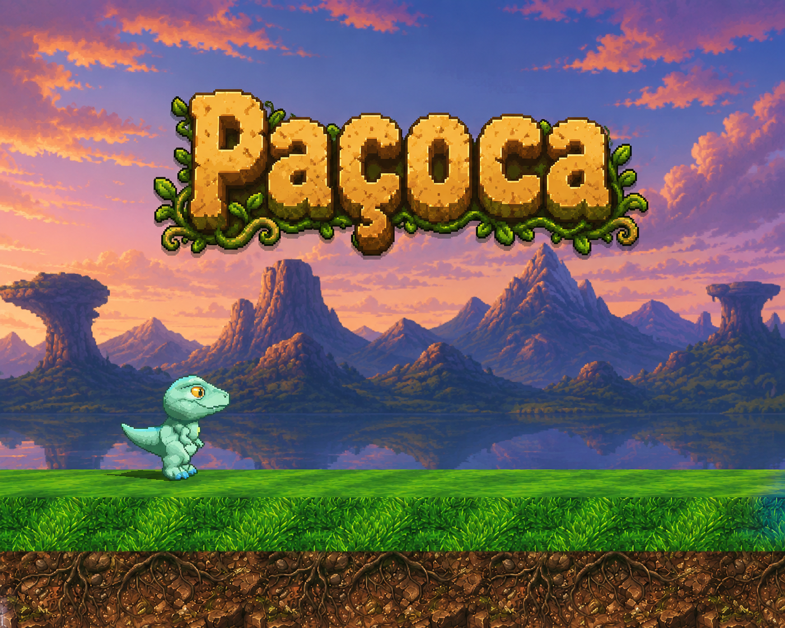
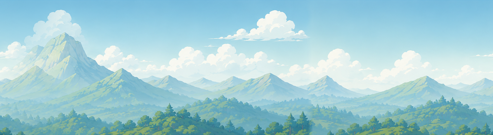
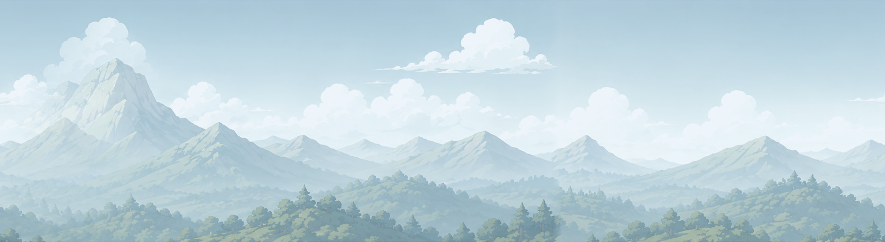
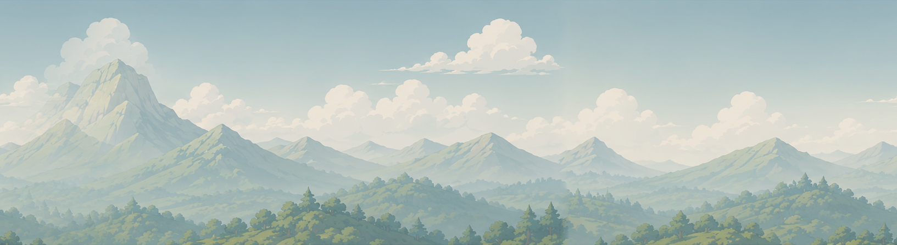
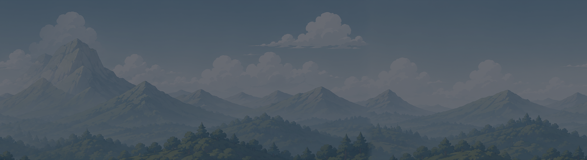

🏃
Física com momentum
Aceleração, atrito, força de rampa, giro carregável, investida diagonal no ar, coyote time e jump buffering.

Platformer 2.5D · ação veloz · jogue no navegador
Controle o Paçoca por fases velozes: giro carregado, investida no ar, moedas, molas e inimigos — com física própria de aceleração e rampas. Depois desenhe suas próprias fases e publique para a comunidade.
Aceleração, atrito, força de rampa, giro carregável, investida diagonal no ar, coyote time e jump buffering.
Pinte plataformas, rampas, moedas, molas e inimigos. Ferramentas de linha, retângulo, balde e seleção — com undo/redo completo.
Jogue sua fase direto no navegador — o jogo a monta na hora. Sem instalar nada, sem download.
Publique o que você criou e jogue as fases de outras pessoas — carregadas direto no motor do jogo.
Cada fase escolhe um tema com materiais de terreno e parallax próprios.




Fases publicadas por outros jogadores. Abra a fase e jogue no navegador.
Ver todas as fasesFiltre por autor, dificuldade e data
Carregando fases…
Carregando fases…
Carregando autores…